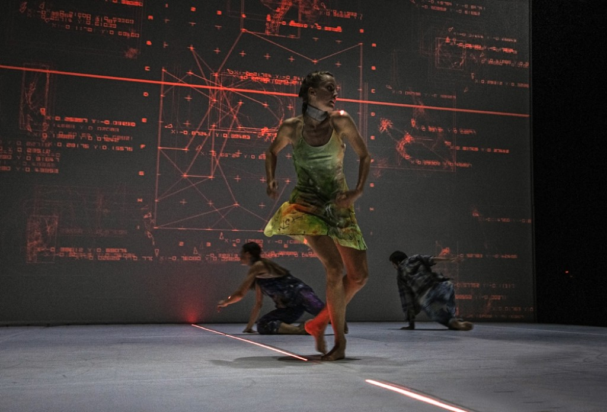

Si potrebbe citare, per primo, Wayne Mcgregor, tra i più recenti sperimentatori di spettacoli in cui realtà virtuale e immagini al computer interagiscono con i danzatori sul palcoscenico per indagare la relazione tra corpo e mente. Il suo Entity si avvaleva di un gruppo di scienziati e ricercatori, oltre all’artista visuale Ravi Deepres che creava un universo digitale parallelo, per arrivare a rappresentare ciò che succede all’interno della mente mentre si danza. Più indietro nel tempo, il più importante precursore del rapporto tra corpo e computer è stato Merce Cunningham. In Italia l’iter multimediale delle relazioni fra danza e tecnologie interattive, includendo la robotica, si deve ad Ariella Vidach e a Claudio Prati . Insomma per dire che gli scenari virtuali non sono nuovi a confondere piani diversi d’indagine. L’importante è che siano le idee forti a disciplinare l’impiego degli strumenti compositivi e non viceversa.
Pontus Lidberg col suo Danish Dance Theatre ci prova con l’ambizioso Centaur il cui soggetto è l’Intelligenza Artificiale. Si chiede Lidberg: “Ha sentimenti, coscienza e desiderio? Non ancora. Ma può già manipolarci e sedurci decodificando sentimenti e stati d’animo”.
Partendo dal mito greco della figura biforme metà uomo e metà cavallo, e muovendosi sempre tra realismo e astrazione, il coreografo svedese ravvede in essa la nuova creatura del nostro millennio dove l’altra metà dell’uomo è stata sostituita, se non totalmente, dal computer. Coadiuvato da Cecilie Waagner-Falkenstrøm , artista esperta di AI, e dal giapponese Ryoji Ikeda, compositore elettronico, Lidberg mette in scena dal vivo, quale ‘partner’ dei danzatori, l’Intelligenza Artificiale ribattezzata David. A esso sono stati “somministrati” una serie di dati – informazioni sulle tragedie greche, la musica di Schubert, i movimenti planetari e degli sciami di uccelli, e altri dati ‒, che funzionano come istruzioni per i danzatori i quali ricevono i suoi input da sensori inseriti su dei collarini portati al collo. David orienta e dirige i loro movimenti con la sua voce fuori campo – come quella di Hal del film Odissea nello spazio di Kubrick. Sono movimenti e sequenze che saranno elaborati da algoritmi e successivamente trasmessi su un grande schermo che ne riporta i risultati analitici proiettati sullo schermo finalizzati a una mappatura e valutazione dei performer dal lato emozionale e caratteriale.
I tre minuti andati in onda la sera del 1° gennaio del 2019 su RaiUno nel corso dello show “Danza con Me” sulle note de La Cura di Franco Battiato, il grande ballerino sperimenta un passo a due con un braccio robotico di oltre una tonnellata. il risultato finale di questo inedito pas de deux è di una dolcezza che non ti aspetti. In certi momenti sembra di rivivere la fiaba della Bella e la Bestia, dove la bestia è evidentemente la macchina, un bestione metallico appena addomesticato nell’unico modo in cui si può addomesticare un robot, intervenendo sul suo algoritmo che non è qualcosa di divino e ineluttabile che capita per caso, non è il DNA, è un insieme e di regole e comandi che gli diamo noi.

Il robot ballerino era del tipo NJ 220-2.7 della Comau. Era un robot pensionato. Era addetto alla verniciatura delle automobili e poi è stato venduto ad una società che organizza grandi eventi che ne aveva bisogno per spostare gli schermi di scena, sempre più grandi e pesanti (questo solleva e sposta fino a 220 chili per volta). L’idea era di mettere assieme da una parte un ballerino così perfetto da essere definito una macchina, e dall’altra una macchina vera ma renderla così delicata nei gesti da darle un tocco di umanità. C’è voluto un mese e mezzo per programmarne i movimenti e non sono mancati incidenti come quando provando il finale, quando il robot raccoglie da terra la giacca di Bolle e gliela porge, ha letteralmente divelto il pavimento. Non per colpa sua, una questione di programmazione. In scena, durante le prove, lo chiamavano Rudy, un omaggio a quello che forse è stato il più grande ballerino di sempre, Rudolph Nureyev. Alla fine di tanta bellezza c’è una morale: il robot pensionato verniciatore che una sera, grazie all'allinteligenza artificiale, ha danzato con Bolle prima di finire a spostare schermi, era umano non per natura ma perché noi umani lo abbiamo programmato così. Sta a noi, con tanta tecnologia a disposizione, costruire un futuro in cui al centro ci siano sempre gli uomini e le donne.